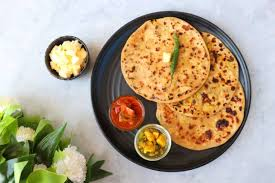

Home
Aloo Paratha

Description
Aloo Paratha is a popular North Indian stuffed flatbread filled with a spiced mashed potato mixture. It's crispy on the outside,
soft on the inside, and bursting with flavors from fresh herbs and spices. Traditionally, it's served with butter, yogurt, or pickle,
making it a comforting and satisfying meal.
This dish is a staple breakfast in Punjabi households but is enjoyed across India at any time of the day. It's easy to make and
perfect for beginners looking to try authentic Indian cuisine.
Ingredients
For the Dough:
- 2 cups whole wheat flour
- ½ teaspoon salt
- ¾ cup water (adjust as needed)
- 1 teaspoon oil (optional)
For the Potato Filling:
- 2 medium potatoes, boiled and mashed
- ½ teaspoon salt (or to taste)
- ½ teaspoon cumin powder
- ½ teaspoon garam masala
- ½ teaspoon red chili powder
- ½ teaspoon chaat masala (optional)
- 1 green chili, finely chopped
- 2 tablespoons chopped coriander leaves
- ½ teaspoon grated ginger
For Cooking:
- 2 tablespoons ghee or butter
- Extra flour for rolling
Steps
Preparing the Dough:
- In a mixing bowl, add whole wheat flour and salt. Gradually add water and knead into a soft dough.
- Apply a little oil to prevent drying, cover, and let it rest for 15-20 minutes.
Making the Potato Filling:
- In a bowl, mash the boiled potatoes until smooth.
- In a bowl, mash the boiled potatoes until smooth.
- Add salt, cumin powder, garam masala, red chili powder, chaat masala, chopped green chili, coriander leaves, and grated
ginger. Mix well.
Stuffing and Rolling the Paratha:
- Divide the dough into equal-sized balls and roll one into a small disc.
- Place 2 tablespoons of potato filling in the center and bring the edges of the dough together to seal it.
- Gently roll it out into a flat, even circle (about 6-7 inches wide).
Cooking the Paratha:
- Heat a tawa or pan on medium-high heat.
- Place the rolled paratha on the hot pan and cook for 30-40 seconds, then flip.
- Apply ghee or butter and cook until golden brown spots appear. Flip again and repeat on the other side.
- Press gently with a spatula for even cooking and crispiness.
Serving:
Serve hot with butter, yogurt, or pickle. Enjoy your delicious Aloo Paratha! 🥞🔥